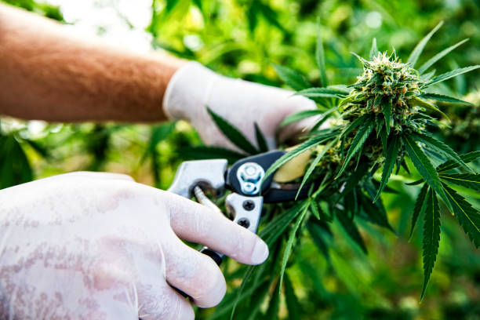

Discover the Secrets of Growing High-Quality Cannabis at Home
Posted by on 2024-06-02
Growing high-quality cannabis at home has become an increasingly popular pastime for many individuals. With the legalization of marijuana in various states and countries, more people are looking to cultivate their own plants in order to have a reliable source of high-quality product. However, growing cannabis is not as simple as planting a seed and watching it grow. There are many factors that need to be considered in order to produce the best possible results.
One of the most important aspects of growing high-quality cannabis at home is choosing the right strain. Different strains of cannabis have different growth patterns, nutrient requirements, and effects when consumed. It is essential to do thorough research on various strains in order to select one that will thrive in your specific growing conditions and meet your desired outcomes.
In addition to selecting the right strain, proper lighting is crucial for successful cannabis cultivation. Cannabis plants require a significant amount of light in order to grow properly and produce potent buds. Many growers opt for LED lights due to their energy efficiency and ability to provide full spectrum light that mimics natural sunlight.
Nutrient management is another key component of growing high-quality cannabis at home. Cannabis plants require specific nutrients at each stage of growth in order to develop strong roots, healthy foliage, and robust flowers. It is important to invest in quality nutrients designed specifically for cannabis cultivation and follow a feeding schedule that meets the plant's needs.
Temperature and humidity control are also critical factors when it comes to growing cannabis indoors. Cannabis plants thrive in temperatures between 70-85 degrees Fahrenheit with relative humidity levels between 40-60%. It is essential to monitor these variables closely in order to prevent mold, mildew, or other issues that can arise from improper environmental conditions.
Lastly, patience and attention to detail are key traits for successful cannabis cultivation. Growing high-quality cannabis takes time, effort, and dedication. It requires daily monitoring of plant health, nutrient levels, watering schedules, and environmental conditions. By staying vigilant and making adjustments as needed, growers can ensure that their plants reach their full potential.
In conclusion, growing high-quality cannabis at home involves careful planning, research, and execution. By choosing the right strain, providing adequate lighting and nutrients, controlling temperature and humidity levels, and maintaining a close eye on plant health throughout the entire growth cycle - growers can discover the secrets to producing top-notch buds in their own homes. With practice and experience, anyone can master the art of cultivating premium quality cannabis at home.